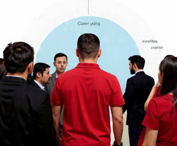
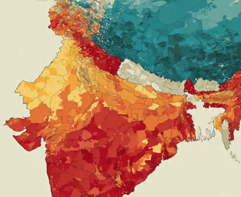

Explorer les données
avec Jean-Herman Guay
Exemple 1 :
le marché de Racine
Ouvrir le Colab correspondant
Exemple 2 :
les incidents de sécurité
Ouvrir le Colab correspondant
Exemple 3 :
les exportations américaines
Ouvrir le Colab correspondant
Exemple 4 :
un thermographe dans le St-Laurent
Ouvrir le Colab correspondant
Exemple 5 :
les opinions à travers le monde

Ouvrir le Colab correspondant
Exemple 6 :
la population active au Canada
Ouvrir le Colab correspondant
Exemple 7 :
les données boursières
Ouvrir le Colab correspondant
Exemple 8 :
les indicateurs de la Banque mondiale
Ouvrir le Colab correspondant 
🎬 Vidéo de 14 minutes
sur les rudiments
🎬 Vidéo de 3 minutes
sur Données Québec
🎬 Vidéo de 4 minutes
sur Pêches et Océans Canada
🎬 Vidéo de 5 minutes
sur le World Values Survey
🎬 Vidéo de 4 minutes
sur Statistique Canada